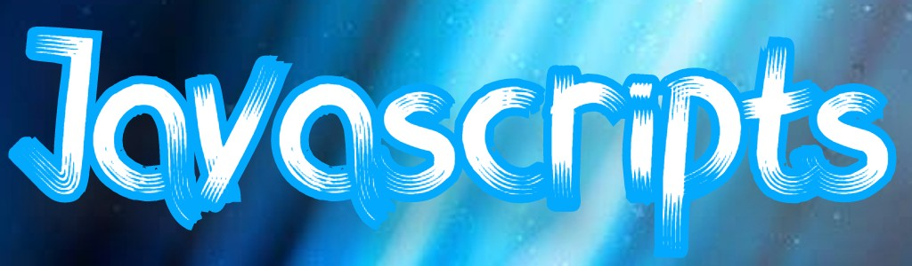
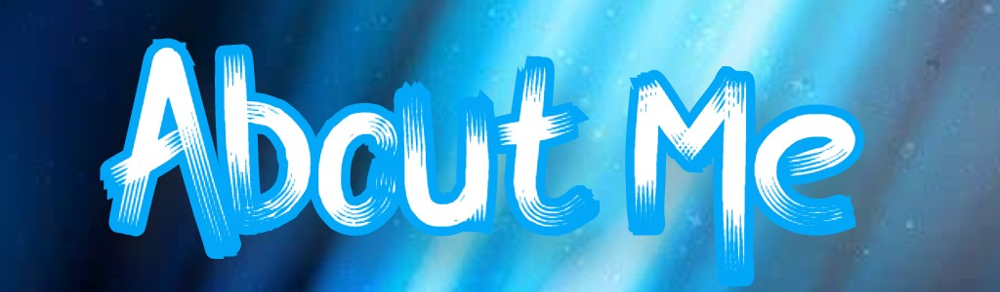

|  |  |
|---|
My name is Anthony Walter Fields and I am a student at University of Rhode Island. I am a freshman here, 2nd semester, and my major is Computer Science. My dream job is to either be a Software Engineer or a Web Developer. Coming from what I like to do is to play video games and play sports. Mostly video games so computer science is relevant to what I like to do the most of. Been playing videon games since i was about 10 and never stopped playing. My favorite game is Black Ops 2. Til this day I still play them here and there, but the passion i have for it is huge. I only know how to code when i was in my junior year. It's pretty fun making codes and designing stuff like that. Knowing becoming a compter science major is also involing a game creator really helped my liking for CS, but all in all I really strive to become it.